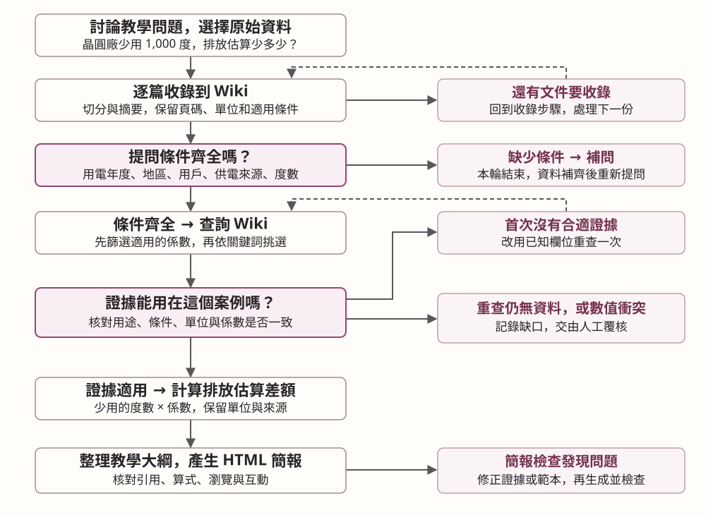

用 RAG 查證工廠永續數據
以晶圓廠外購電力碳排為例
晶圓廠少用 1,000 度電，排放估算會少多少？這份 LLM Wiki 整理 8 份來源、20 筆可回查的證據，保留原文頁碼、年度和適用條件。教學簡報示範 RAG 如何取回支持答案的片段，再由讀者選擇適用的電力排碳係數，算出排放差額。
流程設計
整體採用有分支的 Graph。每篇資料都經過選段、摘要和核對。查係數時先判斷條件是否完整，再決定作答、補問或交給人工覆核。第一次找不到合適證據時，改用已知欄位重查一次，這就是查詢中的 Loop。

一次實際執行紀錄
案例 G 的原問句是「這樣要乘多少？」 初次依關鍵詞檢索沒有命中。案例資料已提供民國 114 年、台灣、產業用戶、公用售電業及少用 1,000 度，程式便用這些欄位重查一次，找到環境部 Q7 的產業係數。
檢查結果為 1,000 度 × 0.466 公斤 CO₂e／度＝466 公斤 CO₂e，符合案例預先設定的答案。這個例子記錄的是查證程式對假設條件的運行結果。查看採用的 Wiki 證據 · 查看七案的原始執行紀錄
兩版比較與反思
初版最常出問題的是第一次挑選係數。案例 B 先挑到台積電報告的 0.474，後續檢查發現這個數字只適合解讀該公司的揭露，便重查本題適用的係數。新版在入口先補問缺少的條件，搜尋時先按年度、用戶與供電方式等條件篩選，最後仍保留證據核對。
| 同一組七個教學案例 | 初版 | 新版 |
|---|---|---|
| 首輪選到不適用的候選 | 3 次 | 0 次 |
| 執行檢索 | 11 次 | 7 次 |
| 進入重查 | 4 次 | 2 次 |
兩版最後都是 4 案作答、2 案補問、1 案人工覆核。提早檢查減少了無效檢索，缺少證據的案例仍交由人員處理。